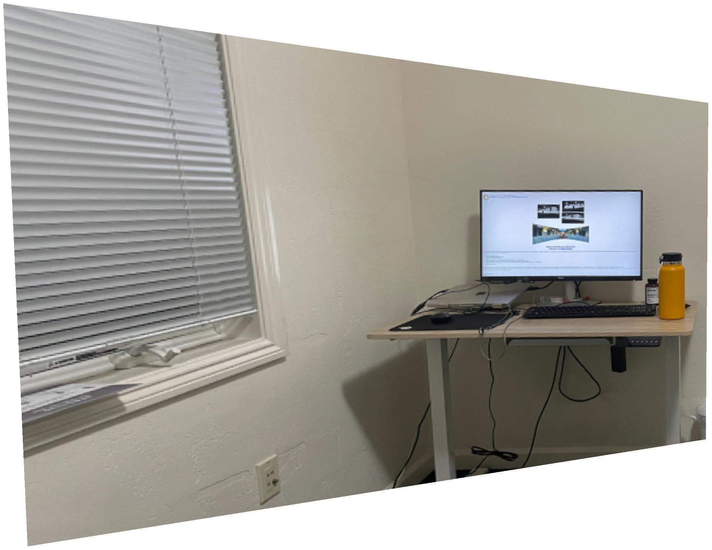

[Two photos of my desk and bed.]
For the first part of this project, I took two photos from the same point in space.
[The first photo, warped so that the computer monitor is perfectly rectangular.]
I wrote a function that calculates a least-squares "homography," which captures a projective transformation. For the first photo, I labelled the four points of the computer monitor. Then I mapped these points to a perfect 16:9 rectangle and applied the resulting homography to the photo.
[The two photos combined as a "mosaic." The original left-half photo has been warped to match the viewpoint of the original right-half photo.]
I obtained a second homography by labelling matching points in my two photos. This allowed me to warp the left-half photo so that it approximately overlayed the right-half photo. To make the homography more precise, I employed gradient descent over the eight parameters of the homography. (My loss function for gradient descent calculated how different the overlapping portions of the photos were on a per-pixel basis.
In order to merge the two photos in a visually satisfying way, I used BFS to calculate the Manhattan distance of each pixel in the overlapping region of the photos from the non-overlapping regions. I used these distances to calculate a weighted-average value for each pixel in the overlapping region.